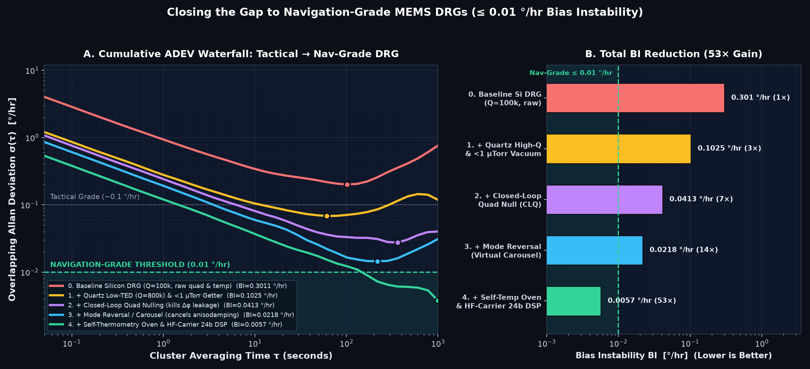

Why tactical Silicon DRGs stall around 0.15–0.30 °/hr, the 5 physical mechanisms holding them back from the ≤ 0.01 °/hr navigation-grade bar, and how each engineering breakthrough drops the Allan Deviation bathtub.
Closing the ~30–50× bias stability gap requires attacking all three regions of the ADEV bathtub simultaneously: short-τ thermal ARW (−1/2 slope), mid-τ flicker/phase-leakage BI (0 slope), and long-τ thermal/anisodamping RRW (+1/2 slope).

model/plot_nav_grade_hurdles.py: combining Quartz High-Q, Closed-Loop Quad Nulling, Mode Reversal (Virtual Carousel), and Self-Thermometry + HF-Carrier 24-bit DSP drives Bias Instability below the 0.01 °/hr navigation-grade line.Tap any combination of the 5 engineering upgrades below to see why no single fix alone reaches navigation grade — you must stack substrate Q, quad nulling, mode reversal, and thermal/electronic stabilization.
Flexing silicon rings heats the compressed side and cools the stretched side; irreversible heat flow across the ring thickness creates Thermoelastic Damping (TED), capping single-crystal Si DRGs near Q ≈ 100k. Low Q hurts twice: Brownian noise scales as 1/√Q, and anisodamping bias scales as 1/Q.
Q = 800k–2M, near-zero TCF) or epitaxial SiC (Q = 500k) inside a < 1 µTorr gold-lid NEG getter vacuum package so gas damping never touches Q.120 °/s × Δφ)Etch taper and crystal anisotropy create 10–120 °/s of stiffness quadrature (90° out of phase with Coriolis). Any tiny electronic phase drift Δφ(T) in the pickoff TIA, ADC, or PLL leaks quadrature straight into the rate channel:
That is 750× larger than the 0.01 °/hr nav-grade limit from just one-thousandth of a degree of analog phase drift!
> 68 dB mechanical nulling, or 229 dB in our live ZUBoard v2!), reducing residual quadrature to < 0.05 °/s before demodulation.Unlike stiffness quadrature (90° out of phase), damping asymmetry between the two principal damping axes produces a force strictly in-phase with Coriolis — indistinguishable from true rotation:
Even a 1% Q-asymmetry on a Q=100k DRG creates ~10 °/hr of bias, and any anchor-stress shift in θτ(T) turns directly into uncalibrated BI & RRW drift.
Silicon's −30 ppm/°C TCF shifts f0 by −0.33 Hz/°C, and CTE mismatch between the die and ceramic LCC package bends the center anchor stem, driving long-τ Rate Random Walk (+1/2 ADEV uptick above 100 s).
Femtofarad parasitic capacitance couples the large AC drive voltage directly into the sense node, op-amp 1/f flicker noise creates an electronic BI floor, and coarse digital controllers (like our Stage 1 v1 Q10.14 FTR) impose a 2.75 °/hr fixed-point floor!
Q10.22 FTR (just like our ZUBoard Stage 1 v2 upgrade, which dropped our FPGA floor 100× to 0.027 °/hr!).